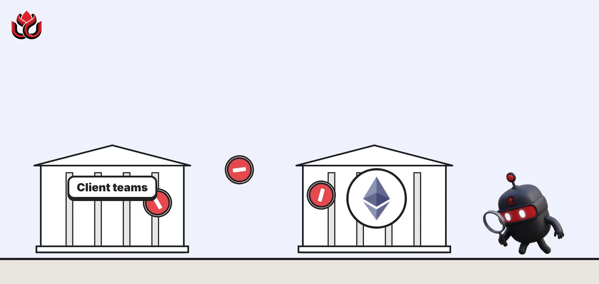
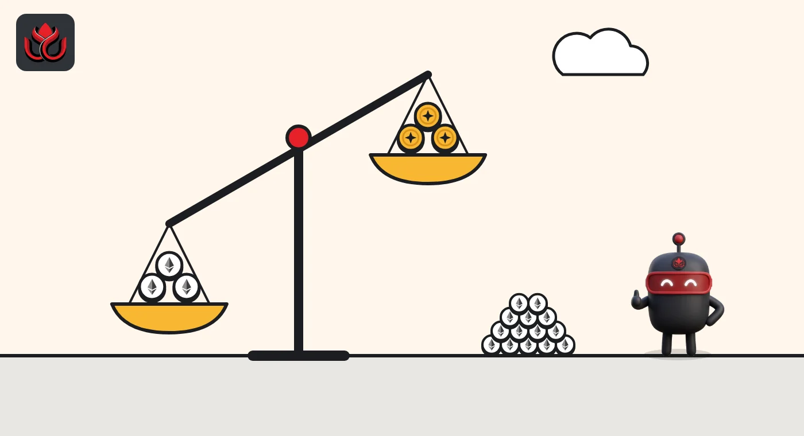
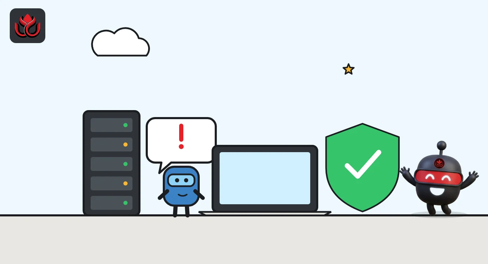

Ethereum pulls Glamsterdam from its last testnet four days out. Is gas pricing the problem?
Client teams removed the October 26 Glamsterdam fork from the Hoodi testnet after security concerns were raised on a core developer call. No new date is set, mainnet users need to do nothing, and the mainnet date now waits on Hoodi.

Key points
- Ethereum's Glamsterdam upgrade was pulled from Hoodi, the last testnet before mainnet, four days before its October 26, 2026, activation.
- Client releases cite security concerns raised on a core developer call on October 22. The upgrade's gas repricing, led by EIP-8037, is under the spotlight because some spent gas could be handed back.
- Mainnet users need to do nothing, and the mainnet date cannot be set until Hoodi runs the upgrade cleanly.
The fork that was pulled
Ethereum client teams pulled the next big upgrade, Glamsterdam, from Hoodi, the network's last public testnet before mainnet, four days before it was due to activate on Monday, October 26, 2026, at 1:42 p.m. ET. No new date has been set, and mainnet users do not need to do anything.
On October 22, client team Nethermind released version 2.2.1, which takes the fork off Hoodi's schedule. The fork is on hold "following the security concerns discussed on ACDE #248", the release notes say. A new date will come in a later release. Hoodi stays on its current fork, known as BPO2, with no next fork announced.
A day later, Reth released v2.8.1, which removes the Amsterdam activation from Hoodi. Amsterdam is the name of the execution-layer half of Glamsterdam. Reth's notes link to an Ethereum Foundation post on the delay.
ACDE #248 is the All Core Developers Execution call, the regular meeting where client teams decide on upgrades. It took place on October 22 at 10:00 a.m. ET, with Glamsterdam first on the agenda.
Why gas pricing is in focus
Gas is the unit Ethereum uses to price computation and storage. Glamsterdam reprices it. EIP-8037, "State Creation Gas Cost Increase", raises and harmonizes the cost of creating new state, such as new accounts, storage slots and deployed contract code, and meters it separately. A companion proposal, EIP-8038, raises the cost of reading and writing existing state. Those prices were last changed in the Berlin fork in 2021, according to the Ethereum Foundation.
The new accounting has a side effect. Under the draft rules, state gas charged for an operation can be handed back when that operation reverts or fails, developer notes on the EIP-8037 specification show. Some contracts were written on the assumption that gas, once spent, stays spent. Many use the amount of gas left, read with a function called gasleft(), as part of their logic or as a safety check.
Security firm ChainSecurity, based in Zurich, has been studying this. It is presenting a talk at the DeFi Security Summit titled "Glamsterdam Hard Fork: When Spent Gas Comes Back". The client releases do not spell out the exact concern raised on the call, and no list of affected contracts has been published.

The warning signs in August
The warning signs were public weeks earlier. On August 24, Ethereum Foundation research, EthPandaOps and specification teams published the results of replaying historical mainnet transactions under the new gas schedule. Each transaction fell into one of four groups:
- Unchanged: the large majority.
- Succeeds with changes: still works, but uses different gas.
- Needs higher gas: runs out at its original limit but completes with a higher one.
- Fails: breaks even with a much higher limit.
The failing group typically hardcodes gas assumptions: fixed stipends, fixed gas values on calls, logic that branches on gasleft(), or presigned transactions with fixed gas limits. The Foundation said it had begun contacting the most affected builders and launched a search tool where maintainers can paste a contract address to see how it would be affected.
The new schedule is meant to support roughly three times more base throughput, the Foundation said. A test network called Platåberget was already running it in August.
Timeline
Ethereum Foundation publishes mainnet replay results for the new gas schedule
ACDE #248 call, with Glamsterdam first on the agenda
Nethermind 2.2.1 removes the Hoodi fork
Reth v2.8.1 removes the Amsterdam activation from Hoodi
Original Hoodi fork time passes with no upgrade

Who has to do what
Nothing changes for mainnet. Nethermind's notes say no other network is affected by the change, so ETH holders and mainnet users need to take no action.
Hoodi node operators had a deadline. A node still running Nethermind 2.2.0 or Reth 2.8.0 would have switched to Glamsterdam at 1:42 p.m. ET on October 26 and split off from the rest of the network. Operators had to upgrade before then. Nethermind added that the consensus client, the second piece of software every Ethereum node runs, must also be on a release that removes the fork.
Both updates are light. Nethermind said 2.2.1 needs no database or configuration changes and can be installed over any 2.2.x version. Reth said v2.8.1 makes no database changes, so a downgrade is possible, but the older version would still activate the fork on Hoodi.
What comes next
No new Hoodi date has been set. Client teams said the date will come in later releases. Because Hoodi is the final testnet before mainnet, the mainnet fork cannot be scheduled until Hoodi has run the upgrade cleanly.
Much of the Ethereum developer community is in Mumbai this week for Devcon and the DeFi Security Summit, where ChainSecurity said it is running Glamsterdam one-to-one sessions for teams. The next ACDE calls are the place to watch for changes to EIP-8037 or EIP-8038 and a fresh schedule.
LC Insight analysis
This section is our reading of the facts above, not a statement of fact.
- This is the process working. A testnet delay costs weeks. A gas rule that quietly breaks live contracts on mainnet could cost users real money.
- We expect Glamsterdam's mainnet date to slip further unless developers trim or rework the state gas rules quickly. Every change needs fresh testing before Hoodi can be rescheduled.
- Contract teams that rely on gasleft() checks or hardcoded gas values should not wait for a new date. The Foundation's August replay already showed which patterns fail, and its lookup tool is public.
What's next
- A new Hoodi date in client releases
- Changes to EIP-8037 or EIP-8038 discussed on core developer calls
- Any public list of affected contracts once fixes are in place
- Outcomes of Glamsterdam sessions at Devcon in Mumbai
Disclaimer. This article is based on public information and the sources listed below as of the update time shown. It is for information only and is not investment, legal or tax advice. Figures may change as companies and authorities publish new data.
Sources
- Nethermind, release 2.2.1 (October 22, 2026)
- Reth, release v2.8.1 (October 23, 2026)
- Ethereum PM, ACDE #248 agenda (October 22, 2026)
- Ethereum Foundation, Glamsterdam repricing testing (August 24, 2026)
- EIP-8037: State Creation Gas Cost Increase
- Ethereum protocol support, EIP-8037 spec notes part 2 (April 28, 2026)
- ChainSecurity, posts on X about Glamsterdam talk and sessions (October 31, 2026)